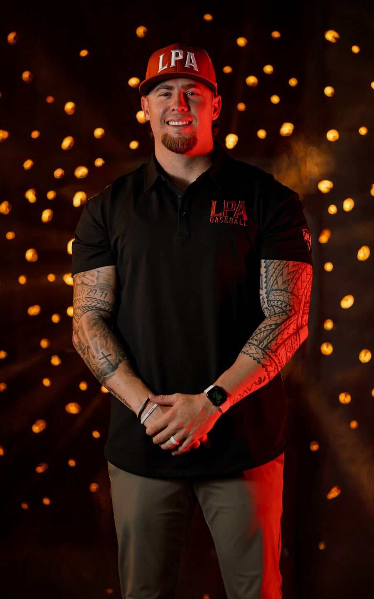
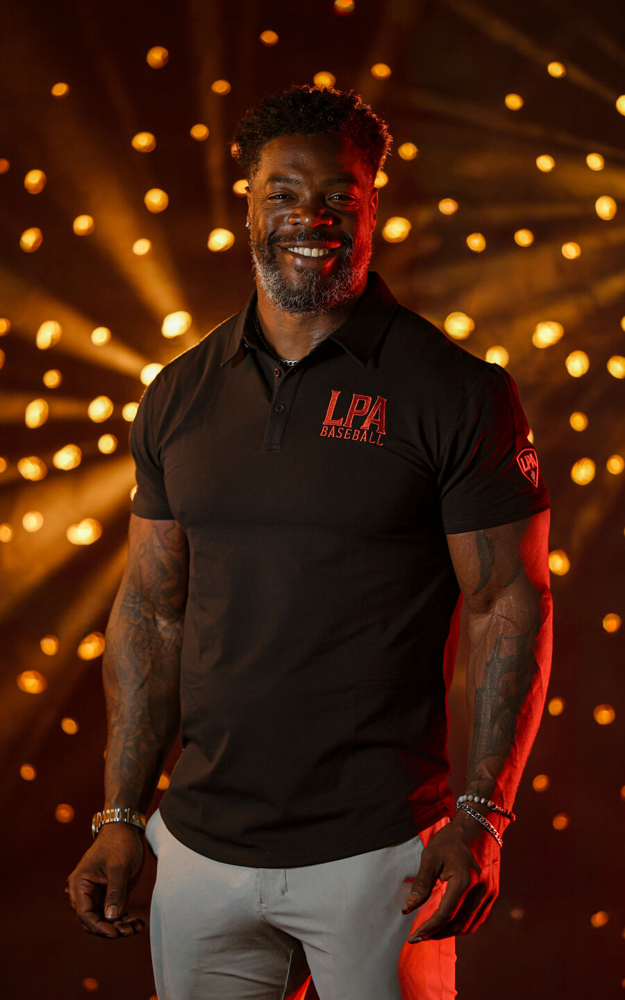
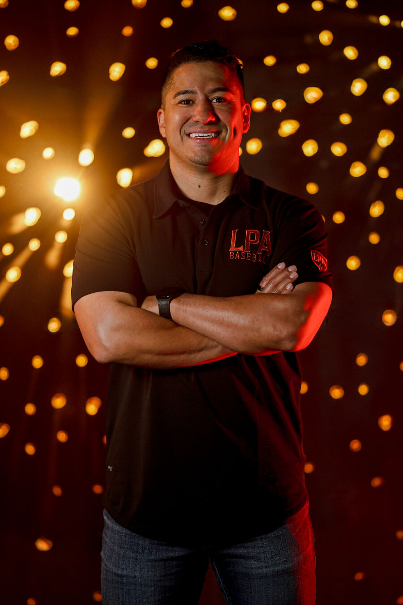
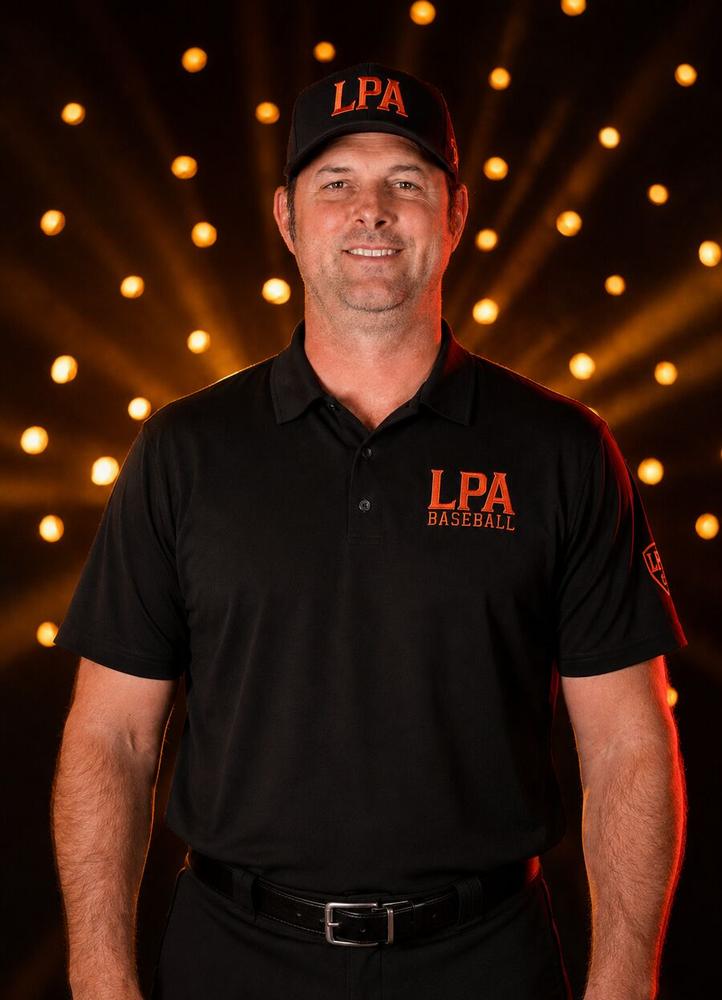
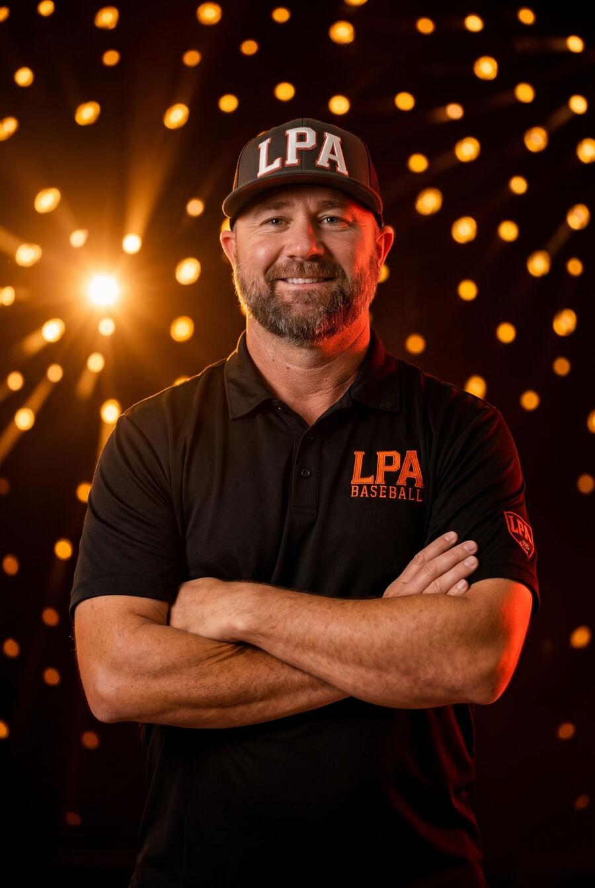
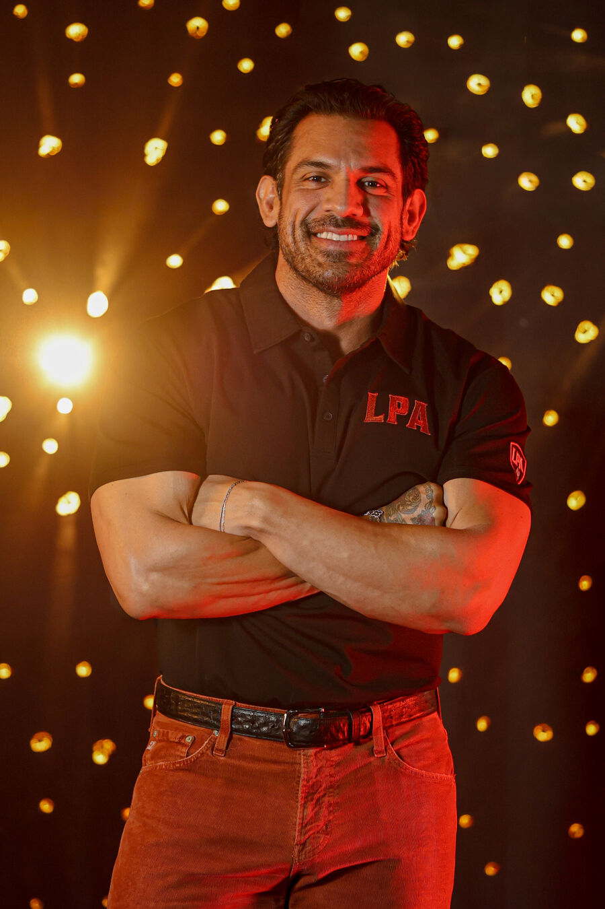
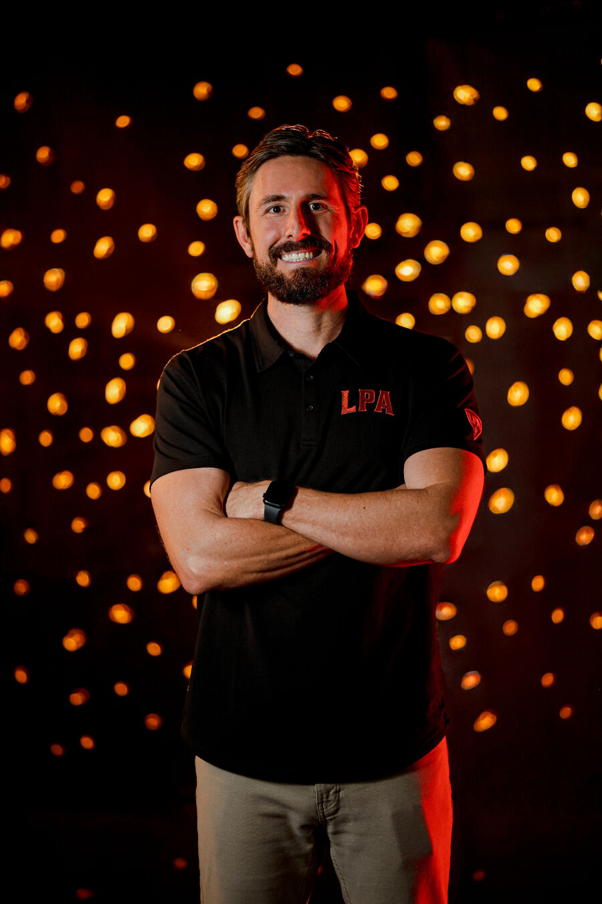
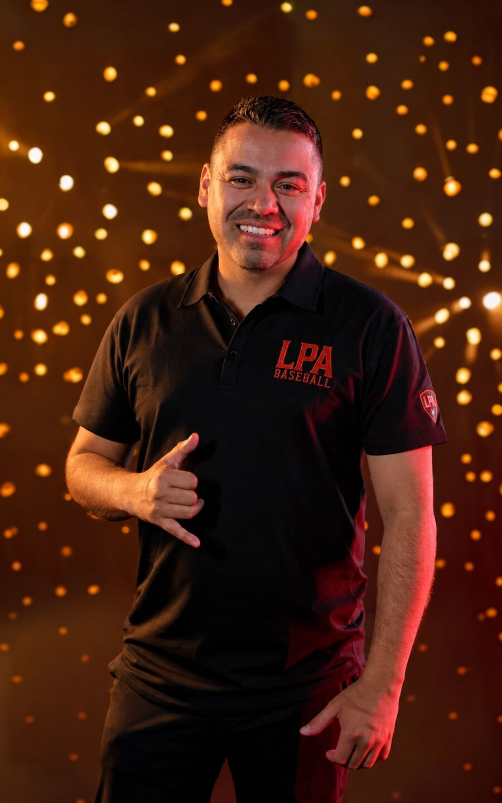
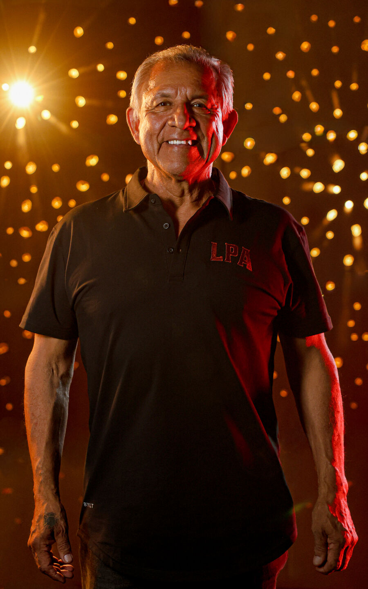

The staff lineup
Former pros, Division 1 players and certified specialists coach, teach and look after every LPA player. Pick a name to read the full career.
- Club
- Legendary Prep Academy
- Field
- Scottsdale, Arizona
- Head coach
- Mark Karaviotis
- On the card
- Sixteen staff
Coaching staff
8 on the card

Playing days Mark Karaviotis
Head Coach
- Former Division 1 baseball player at Oregon
- 2016 Hillsboro Hops batting champion
- 3x MiLB All Star
- 7 years of professional baseball experience


Playing days Joe Dunigan
Hitting Coordinator & Astros Scout
- Former Division 1 baseball player at Oklahoma
- 10 years of professional baseball experience
- Current Area Scout for the Houston Astros

Playing days Terrell Hudson
Assistant Coach
- Former Division 1 baseball player at the University of New Mexico
- Extensive experience in training and managing elite youth baseball

Josh Garcia
Director of Strength & Conditioning
- Certified Strength and Conditioning Specialist (CSCS)
- Performance Enhancement Specialist (PES)
- EXOS Performance Specialist (XPS)
- Precision Nutrition Level 1 Coach (Pn1)
- 16 years experience as a performance coach

Playing days Taylor Hubbell
Middle School Head Coach
- Former Division 1 baseball player at the University of Louisiana
- NJCAA World Series and All Star performer
- Vast experience managing elite youth baseball players and programs

Playing days Steve Karsay
Pitching Development Coordinator
- 1990 1st Round Pick (22) Toronto Blue Jays
- 16 years professional playing career (Oakland A's, Cleveland Indians, Atlanta Braves, NY Yankees, Texas Rangers)
- 13 years professional coaching experience (Cleveland 2012-2018 Minors, MLB Bullpen Coach Milwaukee 2019-2021, Los Angeles Angels MLB bullpen coach 2024-2025)
Isaiah Garcia-Castaneda
Strength & Conditioning Coach
- Former Big Ten Wide Receiver
- Played Division 1 college football for New Mexico State University, and also the University of Nebraska
- Division 1 college weight room experience

Jake Hanen
Assistant Coach
- Former college player (Scottsdale Community College)
- Drafted by the Arizona Diamondbacks
- 10+ years coaching elite amateur baseball
Front office
2 on the card
Will Armijo
CEO & Co-Founder
- Former Division 2 baseball player
- Holds an MBA
- 15 years of entrepreneur experience
- Founder of 6 companies

RJ Etchebarren
COO
- Former GCU baseball player, 39th-round Diamondbacks draft pick
- Holds MBA and BS in Sports Management
- Directed student-athlete success initiatives at GCU
- 14+ years corporate and operational leadership experience
Administration
4 on the card
Martin Jacquez
Administration
- 17+ year U.S. Coast Guard veteran
- Operational leadership in counter-drug and rescue missions
- Barrett Honors College student, Arizona State University
- Double major in Political Science and Public Policy
- Minor in Sports Business

Billy Armijo
Facilities & Transportation Manager
- 22 years Gallup Fire Department
- 10 years Scottsdale Fire Department
- Former TRT, Hazmat, airport Team
- Former paramedic & EMT
- Former Police Reserve (New Mexico)
- CDL certified

Brandon Bouchard
Social Media and Marketing Coordinator
- 10 Years of Graphic Design Experience

Jay Mar Lagmay
Operations Support Specialist
- 3 years of Workforce Management Experience
- 3 years of Business Virtual Assistant Experience
Operating partners
2 on the cardChef Miguel Rueda IV
Culinary Partner
- Saucier of a Michelin Recommended Restaurant
- 7+ years Executive Chef experience
- 16Andy LeonardFinancial Consultant